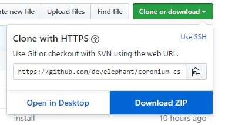
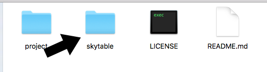

Corona SDK
Coronium SkyTable works with Corona SDK with a custom module. You will need this module to interact with your Coronium CS instance.
Get The Client
First point your browser to the Coronium SkyTable GitHub repo.
Next, click the "Clone or Download" button and select "Download ZIP" to a location on your computer.

Expand the coronium-skytable-master.zip file and navigate to coronium-skytable-master/skytable directory.

Copy the skytable directory to the root of your Corona SDK project.
Adding The Client
Once you have the skytable directory in your project, do the following to incorporate it.
Open your main.lua file and add the following:
local skytable = require('skytable.client')
Initialization
local skytable = require('skytable.client') skytable:init({ host = '<your-ip-address>', key = '1234' })
Init Parameters
| Parameter | Description | Required |
|---|---|---|
host |
The instance address | Y |
key |
The client display name | Y |
base |
The base path (i.e: app1) | N |
user_key |
The users key | N |
debug |
Output client-side debugging info. | N |
Tip
See Client API to start using the API.